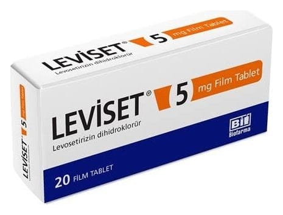

Leviset 5 mg/ml Oral Damla, 20 ml

Ne için kullanılır
KT · Bölüm 1• LEVİSET alerji tedavisinde kullanılan antialerjik bir ilaçtır. • LEVİSET, ağızdan alınan bir damladır. • LEVİSET, kapağında damlalık bulunan 20 ml’lik bal renkli cam şişe ambalajda berrak ve renksiz sıvı olarak takdim edilmektedir. • LEVİSET, yetişkinlerde ve 2 yaş ve üstü çocuklarda, alerjik nezle (inatçı alerjik nezleyi de içeren) ve kurdeşen (ürtiker) ile ilişkili belirtilerin giderilmesinde endikedir.